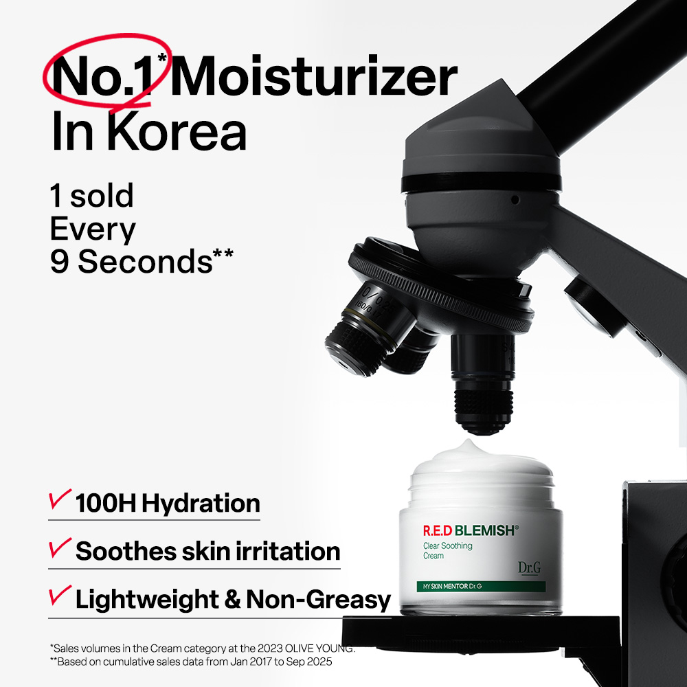
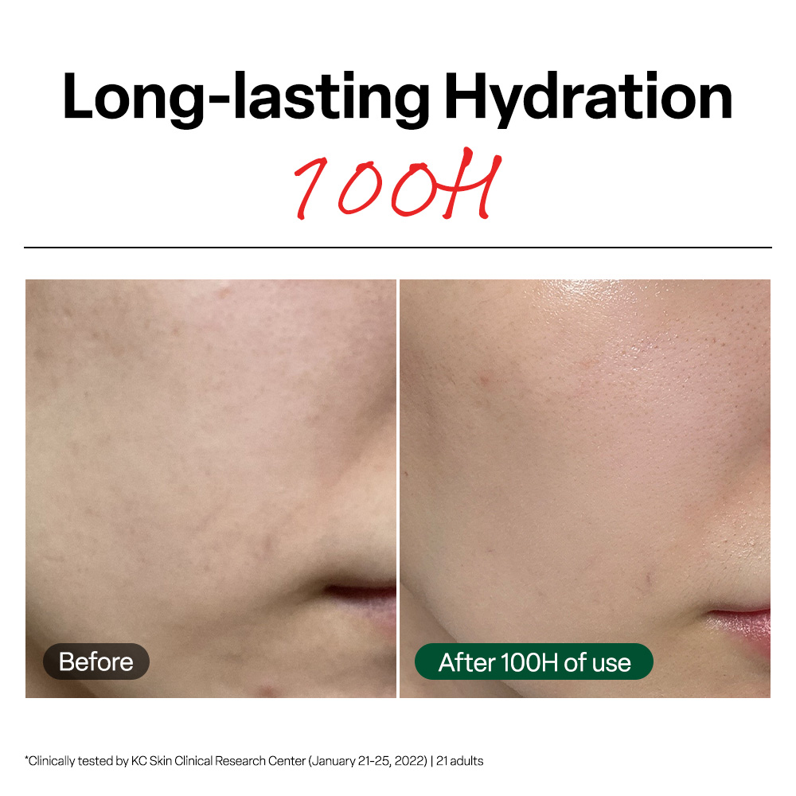
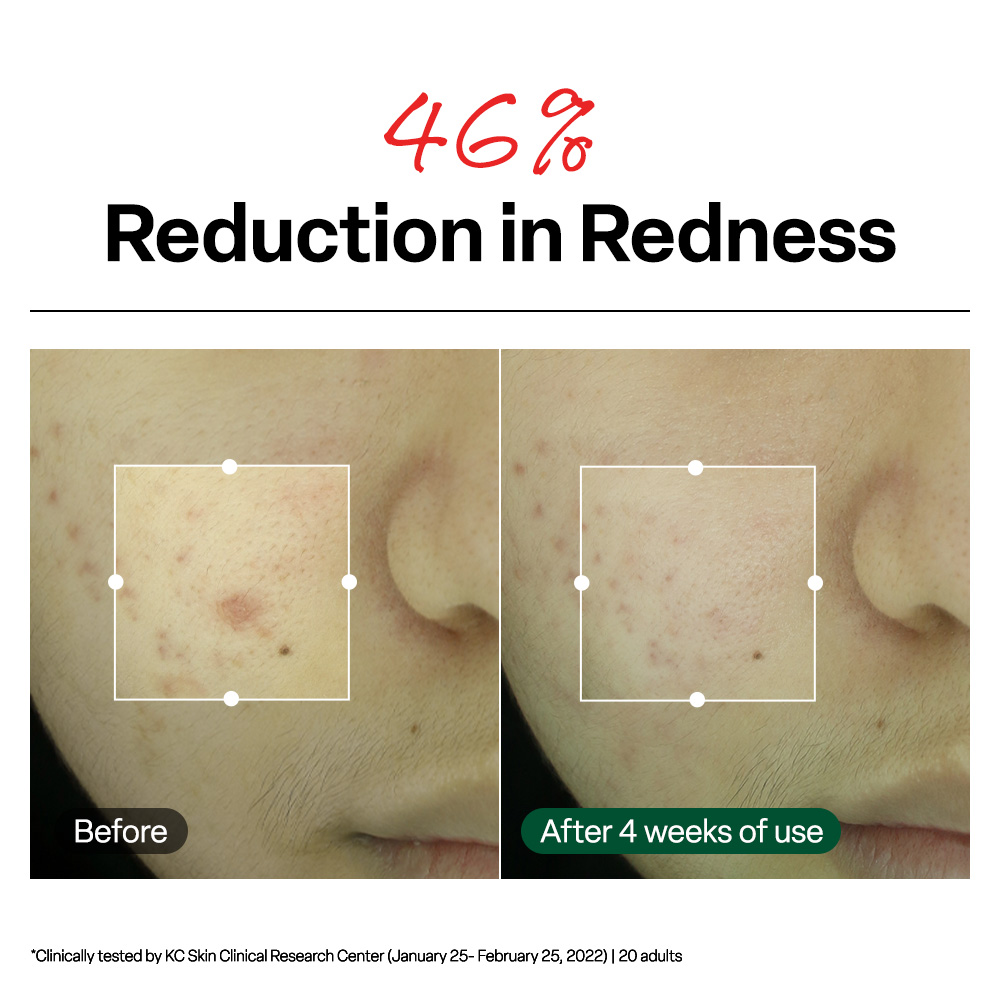
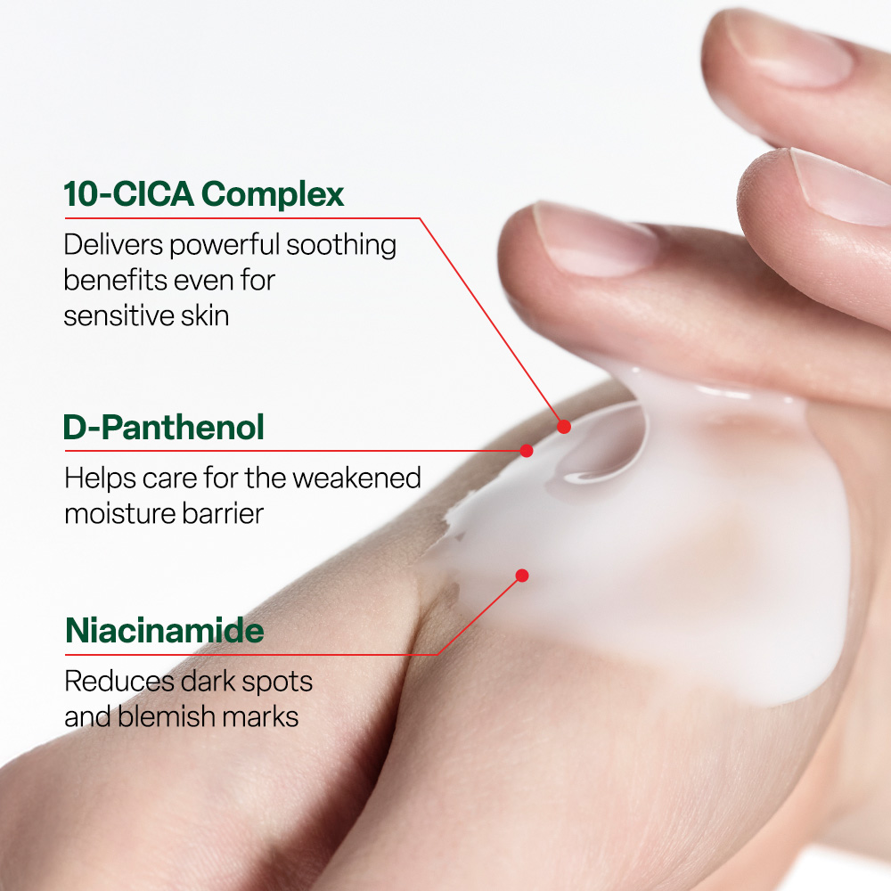
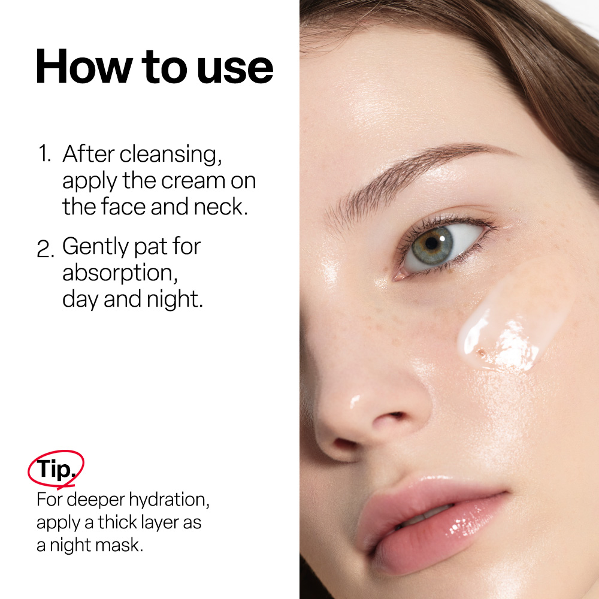
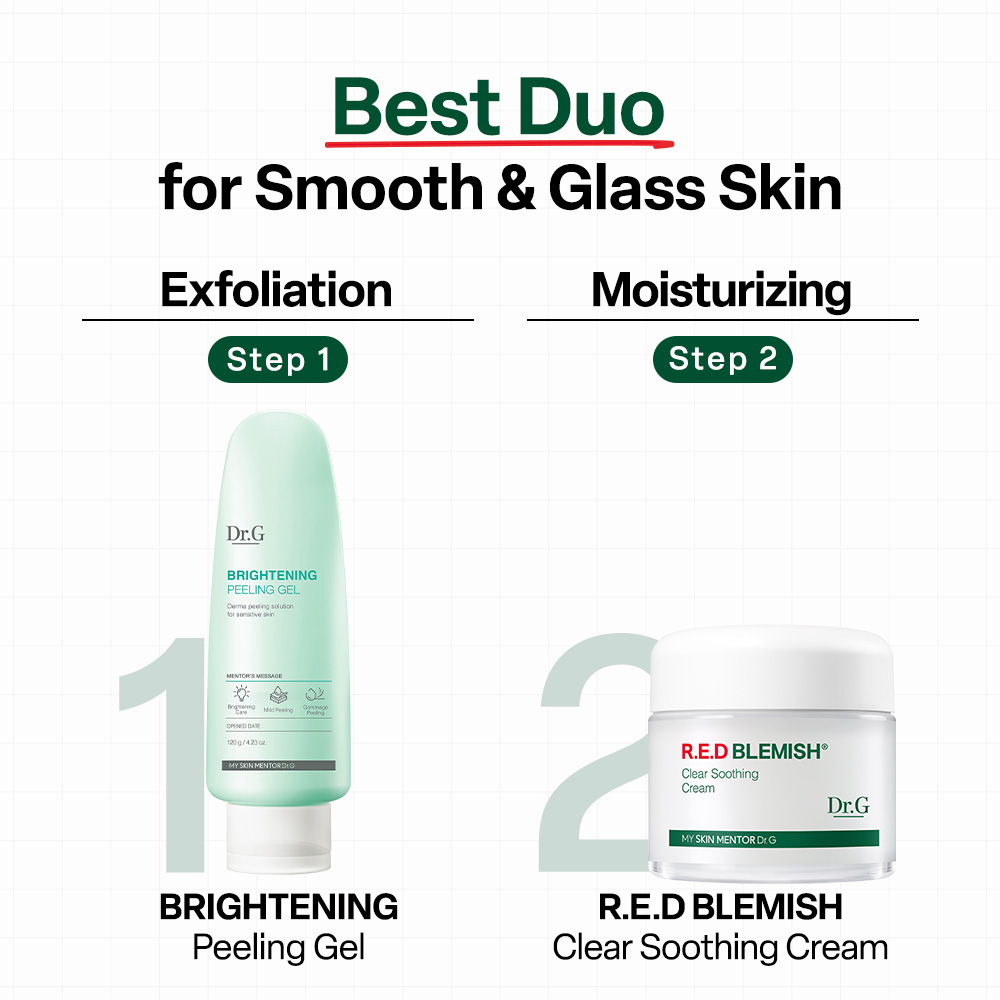

레드 블레미쉬 수딩 크림 70ml
3명 중 1명이 선택한 대한민국 No.1 페이셜 크림.
피부 임상 테스트를 거친 기본적인 진정 케어를 넘어 피부 본연의 방어력을 강화하고 회복을 돕는 수딩 수분 크림입니다. 민감한 피부를 즉각 편안하게 해주고, 시술 후 관리에도 좋습니다.
피부 임상 테스트를 거친 기본적인 진정 케어를 넘어 피부 본연의 방어력을 강화하고 회복을 돕는 수딩 수분 크림입니다. 민감한 피부를 즉각 편안하게 해주고, 시술 후 관리에도 좋습니다.
구분 :보습제
- 3명 중 1명이 선택한 대한민국 No.1 페이셜 크림.
- 피부 임상 테스트를 거친 기본적인 진정 케어를 넘어 피부 본연의 방어력을 강화하고 회복을 돕는 수딩 수분 크림입니다. 민감한 피부를 즉각 편안하게 해주고, 시술 후 관리에도 좋습니다.
- 닥터지 R.E.D 블레미쉬 클리어 수딩 크림 EX는 10가지 성분을 담아 업그레이드한 3세대 포뮬러가 특징입니다.시카 엑소좀—전달 10억 개의 고효능 진정 활성제 고압 처리를 통해 파생됩니다.
- 플럼핑과 결합 히알루론산 활성 판테놀, 피부 30층까지 깊숙이 수분을 공급하고 약해진 수분 장벽을 강화해 주며, 10종 매일의 피부 자극.
- 피부과 전문의 및 전문가 테스트로 확인한 주요 임상 결과:
- 즉각적인 진정 및 냉각: 열로 달아오른 피부를 즉각적으로 진정시켜 줍니다. -9°C 1회 사용 후 붉은기가 눈에 띄게 줄어듭니다. 10.7% 이내에 24시간 자극받은 피부 트러블을 진정시켜주는 8% ~ 후에 3일.
- 200시간 지속되는 수분: 각질 30층까지 깊숙이 수분을 공급해 수분 보유력을 높이고 촉촉함을 오래 유지해 줍니다. 200시간.
- 장벽 관리: 약해진 피부 수분 장벽을 강화해 52% ~에 2주.
- 메이크업 베이스 준비: 메이크업 밀착력을 향상시켜줍니다. 57% 매끄럽고 결점없는 베이스를 위해
- 피부의 붉은기를 눈에 띄게 진정시켜줍니다. 10.7% 이내에 24시간 사용*.
- 자극받은 피부 트러블을 진정시켜줍니다. 8% ~ 후에 3일 사용*.
- 10-시카 엑소좀
- 기능: 일반 엑소좀보다 100배 더 농축되어 있으며, 모공보다 2,600배 작은 크기로 피부 깊숙이 수분을 공급하고 강력한 진정 효과를 선사합니다.
- 중요한 이유: 10억 개의 고효능 활성 성분이 피부 깊숙이 침투해 더욱 빠르고 강력한 진정 및 회복 효과를 선사합니다.
- 기능: 프로비타민 B5가 약해진 피부 수분 장벽을 집중적으로 케어하고 강화하는 데 도움을 줍니다.
- 중요한 이유: 손상되고 약해진 수분 장벽을 보호하고 강화해 건강한 피부 상태를 유지해 줍니다."
- AQUA / WATER / EAU, GLYCERIN, BUTYLENE GLYCOL, DICAPRYLYL ETHER, 나이아신아마이드, 1,2-HEXANEDIOL, HYDROGENATED POLYDECENE, PENTYLENE GLYCOL, DICAPRYLYL CARBONATE, VINYL DIMETHICONE, HYDROXYETHYL ACRYLATE/SODIUM ACRYLOYLDIMETHYL TAURATE COPOLYMER, CAPRYLYL METHICONE, 판테놀, DIMETHICONOL, POLYMETHYLSILSESQUIOXANE, ACRYLATES/C10-30 ALKYL ACRYLATE CROSSPOLYMER, TROMETHAMINE, DIPOTASSIUM GLYCYRRHIZATE, GLYCERYL ACRYLATE/ACRYLIC ACID COPOLYMER, ETHYLHEXYLGLYCERIN, XANTHAN GUM, 센텔라 아시아티카 LEAF EXTRACT, FRUCTOOLIGOSACCHARIDES, SODIUM PHYTATE, ALLANTOIN, LEUCONOSTOC/RADISH ROOT FERMENT FILTRATE, YEAST FERMENT EXTRACT, LACTOBACILLUS FERMENT, LACTOBACILLUS/SOYBEAN FERMENT EXTRACT, TOCOPHEROL, EPIGALLOCATECHIN GALLATE, MADECASSOSIDE, 베타글루칸, 센텔라 아시아티카 EXTRACT, ASIATICOSIDE, MADECASSIC ACID, ASIATIC ACID (F.I.L. T70101339/1)
- STEP 1. 스패출러나 손끝으로 크림을 적당량 덜어냅니다.
2단계: 피부결을 따라 얼굴 안쪽에서 바깥쪽으로 부드럽게 펴 발라줍니다.
3단계: 손바닥으로 가볍게 두드려 피부 깊숙이 흡수시켜 주세요.
전문가 팁: 더욱 강한 진정 및 쿨링 효과를 원하시면 사용 전 크림을 냉장고에 넣어두거나, 밤에 두껍게 펴 발라 수면 마스크로 활용해 보세요.
"피부는 방어 체계가 약해지면 자극에 반응합니다. 저희 병원에서는 자극을 빠르게 진정시키고, 피부 반응이 시작되는 부위부터 관리해야 한다고 봅니다."
서울 대표 피부과 전문의


자주 묻는 질문
한국 소비자들이 닥터지를 사랑하는 이유
병원에서 시작된 혁신


K-뷰티 감성


민감성 피부 테스트 완료